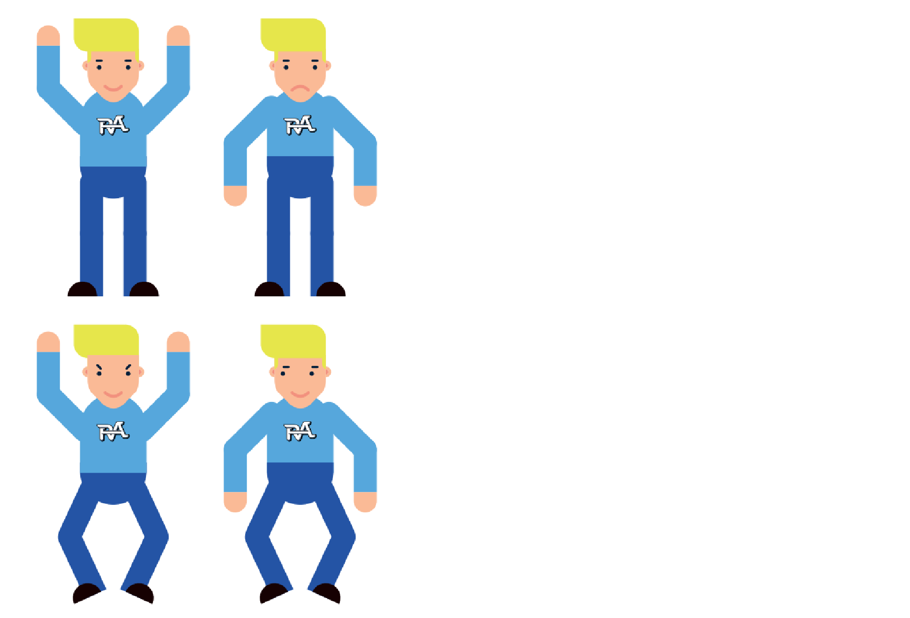
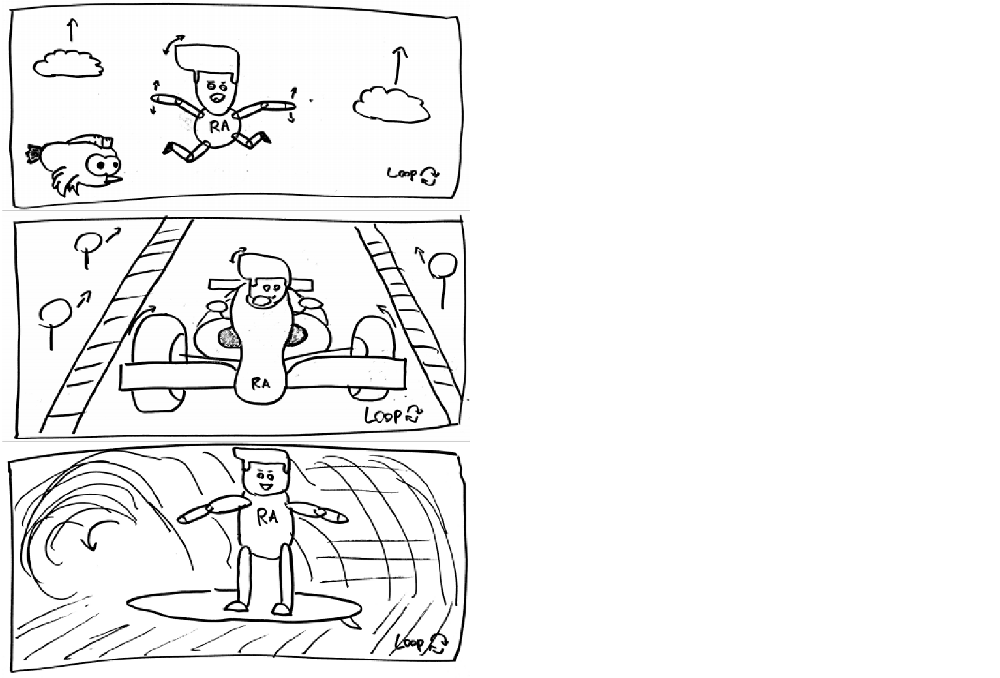
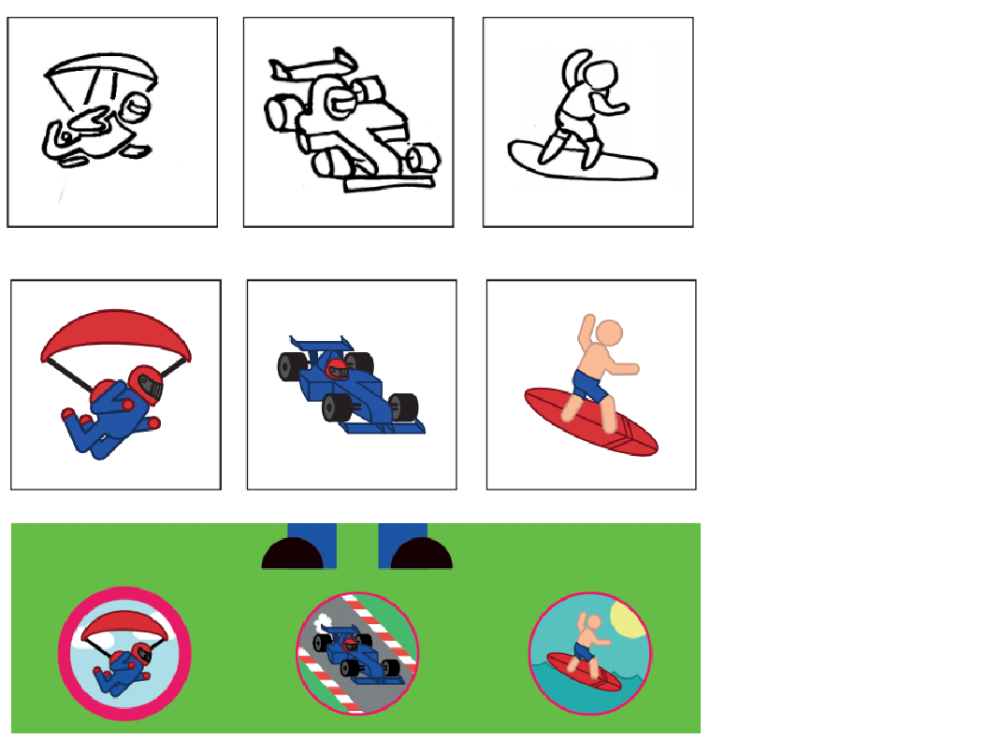
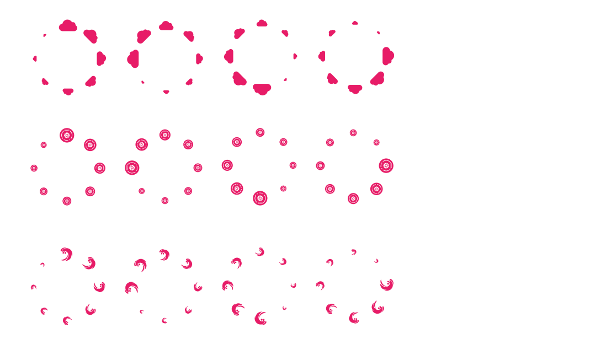
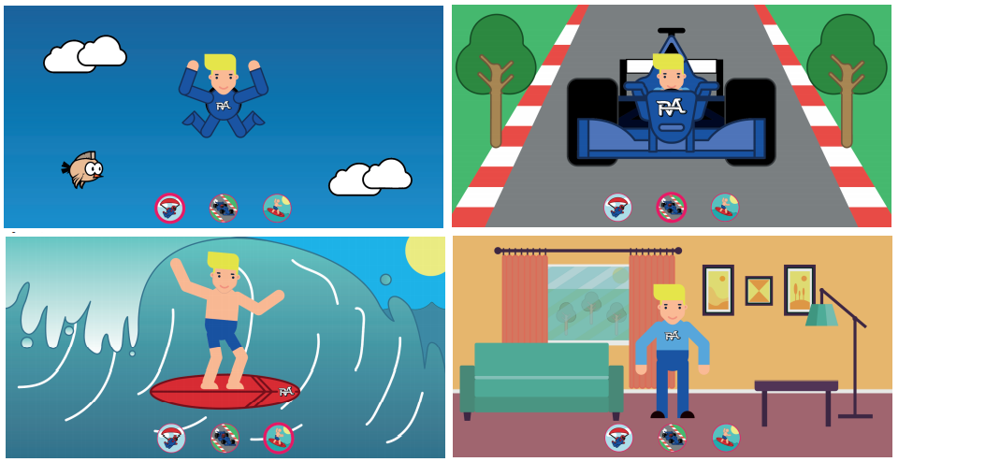

Leerdoel: 'Bij het vak Interface & Beweging leert de student hoe je een animatie maakt, hoe je motion in een interface-ontwerp kunt toepassen en hoe je een interactieve ervaring kan verrijken en verbeteren met behulp van animatie en geluid'.
Ik heb er voor gekozen om mezelf te animeren. Daarbij heb ik ervoor gekozen om mezelf 3 dingen te laten doen die ik nog nooit in mijn leven heb gedaan. Deze 3 dingen zijn skydiven, autoracen en surfen. Als eerste moesten we ons digitaal karakter maken, zoals hier onder is te zien:
Mijn digitaal karakter
Voor opdracht 2 was het bedoeling dat we schetsen gingen maken van 3 functies. Het digitale karakter kan doormiddel van 3 knoppen de 3 functies uitvoeren, deze opdracht komt later. Van boven naar onder is skydiven, autoracen en surfen te zien.
Schetsen van mijn 3 functies
Voor opdracht 3 was het de bedoeling om de knopjes te maken. Deze knopjes moeten aangeven welke functie je gaat bekijken doormiddel van een passende animatie, deze is te zien in mijn Animatie onderaan deze pagina. Van links naar rechts is skydiven, autoracen en surfen te zien.
Mijn 3 bewegende iconen
Voor opdracht 4 was het de bedoeling dat we passende transities gingen maken. Van boven naar beneden: Transitie naar skydive-animatie toe, transitie naar autorace-animatie toe en als laatste de transitie naar surf-animatie toe. De transities zijn te zien in mijn verslag of in de animatie onderaan deze pagina.
Mijn loaders
Dit is hoe ik mijn animaties heb vorm gegeven, van links naar rechts, skydiven, autoracen, surfen en als laatste de zerostate. De Zerostate is het scherm waar je terecht komt als je mijn animatie voor het eerst bekijkt.
Mijn illustraties
Voor dit vak moesten we een uitgebreid verslag bijhouden, neem eens een kijkje!
Hier onder is het linkje naar mijn animaties voor het vak Interface en Beweging te vinden.
Ik hou er van om te animeren en te illustreren, dit vak was daarom mijn favoriete vak van deze minor. Ik heb erg genoten van de leerstof en ik wil daarom Bart-Jan Steerenberg erg bedanken voor de leuke lessen!
7,5